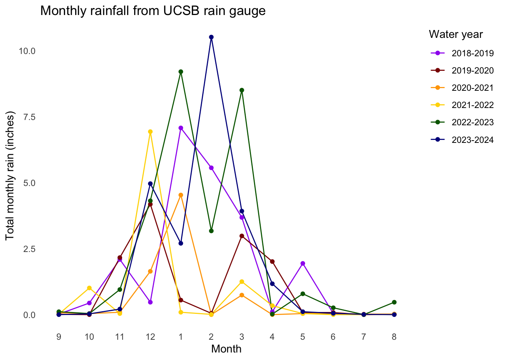

# insert code to read in packages here
library("tidyverse")
library("janitor")
library("here")
# read in data
rain <- read_csv(here("posts", "coding_example", "200dailys.csv"))Explaination
Cleaning, wrangling, and creating visualization to analyze monthly rainfall from UCSB rain gauge.
setup
cleaning and wrangling
rain_clean <- rain |>
# 1. what changes after this function?
# [the names of the columns are cleaned. The spaces are replaced with underscores.]
# give an example.
# [station id turns to station_id]
clean_names() |>
# 2. what new column is created?
# [A new column water_year_minus1 is created.]
# give an example of a value in this column.
# [water_year_minus1 reads 1959 for years 1960]
mutate(water_year_minus1 = water_year - 1) |>
# 3. what old column is changed?
# [water_year is changed]
# give an example of a value in the old column, and explain how it changed.
# [If a value in the old column is 1951, the following year is hyphenated and added onto the previous year. The new column is 1951 - 1952.]
mutate(water_year = paste0(water_year_minus1, "-", water_year)) |>
# 4. what columns are excluded from the data frame?
# [The water_year_minus1 and code columns are excluded.]
# give an example of a value in water_year_minus1
# [1957]
# give an example of a value in code
# [E311]
select(!c(water_year_minus1, code)) |>
# 5. which column is manipulated, and what changes about it?
# Hint: run str(rain_clean) in the Console. what do you see for the month column?
# [The month column changes from col_double() to a factor with 12 levels. The relevel function is also reordering the levels to be explicitly specified. The number are representing the months of the year in a specific sequence.]
mutate(month = as_factor(month),
month = fct_relevel(
month,
"9", "10", "11", "12", "1", "2", "3", "4", "5", "6", "7", "8")
) |>
# 6. what is being calculated? on an annual, monthly, or daily scale?
# [For each unique month represented by digits and water_year, the sum of the daily_rain values. na.rm = TRUE ensure missing values in daily_rain are ignored during the summation.]
# give an example.
# [It calculates the total for all the daily_rain values in month 9 of water_year 1952.]
group_by(month, water_year) %>%
summarize(total_rain = sum(daily_rain, na.rm = TRUE)) |>
ungroup() |>
# 7. what is being done to which columns?
# missing combinations of values of water_year and month are being filled in with 0
# give an example.
# july in 1951-1952 was not in the data frame previously, and now is present with a total rain of 0 inches
complete(water_year,
month,
fill = list(total_rain = 0)) |>
# 8. which observations are kept after this filtering step?
# [Only the observations from 2018-2024 are being kept.]
filter(water_year %in% c("2018-2019",
"2019-2020",
"2020-2021",
"2021-2022",
"2022-2023",
"2023-2024"))`summarise()` has grouped output by 'month'. You can override using the
`.groups` argument.Vizualization
ggplot(rain_clean, # using rain_clean df
aes(x = month, # variable on x
y = total_rain, # variable on y
color = water_year, # color the years
group = water_year)) + # organize data by water_year
geom_line() + # connecting the plots with the same water_year
geom_point() + # adding points to the line
labs(x = "Month", # relabeling the x axis
y = "Total monthly rain (inches)", # relabeling the y axis
title = "Monthly rainfall from UCSB rain gauge", # adding title
color = "Water year") + # add colors
scale_color_manual(values = c("purple", "darkred", "orange", "gold",
"darkgreen", "darkblue"), # Changed the colors
labels = c("2018-2019", "2019-2020", "2020-2021", "2021-2022",
"2022-2023", "2023-2024")) +
theme_bw() + # add theme
theme(
legend.position.inside = c(0.95, 0.95), # Place legend at top right inside the plot (updated from deprecated legend.position)
legend.justification = c(1, 1), # Anchor the top right of the legend to the coordinates
panel.grid.major = element_blank(), # remove major lines
panel.grid.minor = element_blank(), # remove minor lines
panel.border = element_blank(), # remove border
axis.ticks = element_blank(), # remove axis ticks
plot.title = element_text(hjust = 0) # center the plot title
)